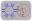

 Geneva Wheel GUI |
| Description |
|---|
| Macro avec interface graphique qui permet à l'utilisateur de créer un mécanisme de roue de Genève à partir de zéro. Cette macro est basée sur la macro de Drei Macro Geneva Wheel |
| Auteur |
| quick61 |
| Liens |
| Recettes macros Comment installer une macro Comment ajouter une barre d'outils |
| Version |
| 1.0 |
| Date dernière modification |
| 2014-09-21 |
Macro avec interface graphique qui permet à l'utilisateur de créer un mécanisme de roue de Genève à partir de zéro
Pour utiliser cette macro, la copier dans votre répertoire Macro de FreeCAD et inclure l'image GW_Dim.png ci-dessous dans le même répertoire que le macro.
Macro Geneva Wheel GUI.FCMacro
#Creation of a Geneva Wheel with Parametric values By: Isaac Ayala (drei) & Mark Stephen (quick61)
#This Macro creates the main parts of a Geneva Wheel Mechanism
#It depends on six values that must be altered in the following code
#The variables are a, b, n, p, t and h.
#Definition for each variable
# Input
#a = Drive Crank Radius
#b = Geneva Wheel Radius
#p = Drive Pin Radius
#t = Geneva Wheel Tolerance
#h = Geneva Wheel Height
#n = Driven Slot Quantity
# Output
#c = Distance Between Centers
#s = Slot Center Width
#w = Slot Width
#y = Stop Arc Radius
#z = Stop Disc Radius
#v = Clearance Arc
#Please note that you can alter the code so it depends on five values exclusively
#Just replace c, and either a or b with the following
# Keep value for a
#c = a/math.sin(math.pi/n)
#b = math.sqrt((math.pow(c,2))-(math.pow(a,2)))
# Keep value for b
#c = b/math.cos(math.pi/n)
#a = math.sqrt((math.pow(c,2))-(math.pow(b,2)))
from __future__ import division
import math
from FreeCAD import Base
from PySide import QtGui, QtCore
from PySide.QtGui import QApplication, QDialog, QMainWindow
import Part
import Draft
class p():
def Ggear(self):
try:
#Inputs
a = float(self.dCr.text())
#b = float(self.gWr.text())
p = float(self.dPd.text())
t = float(self.gWt.text())
h = float(self.gWh.text())
n = float(self.gWn.text())
#Outputs
#c = math.sqrt(pow(a,2) + pow(b,2))
c = a/math.sin(math.pi/n)
b = math.sqrt((math.pow(c,2))-(math.pow(a,2)))
s = a + b - c
w = p + t
y = a - (3 * p)
z = y - t
v = (b * z)/a
m = math.sqrt((v**2)+(z**2)) # Solves for location of clearance cut axis
# Create the Drive Crank (Will be placed on the origin)
driveCrank = Part.makeCylinder(z, h)
#driveCrank.translate(Base.Vector(0,0,0))
#genevaWheelClearanceCut = Part.makeCylinder(b, h)
#genevaWheelClearanceCut.translate(Base.Vector(-c,0,0))
genevaWheelClearanceCut = Part.makeCylinder(v, h)
genevaWheelClearanceCut.translate(Base.Vector(-m,0,0))
driveCrank = driveCrank.cut(genevaWheelClearanceCut)
driveCrankBase = Part.makeCylinder((a+(2*p)), h)
driveCrankBase.translate(Base.Vector(0,0,-h))
driveCrank = driveCrank.fuse(driveCrankBase)
drivePin = Part.makeCylinder(p,h)
drivePin.translate(Base.Vector(-a,0,0))
driveCrank = driveCrank.fuse(drivePin)
# Create the Geneva Wheel (Will be placed on the x-axis on the left side)
genevaWheel = Part.makeCylinder(b,h)
genevaWheel.translate(Base.Vector(-c,0,0))
stopArc = Part.makeCylinder(y, h)
stopArc.rotate(Base.Vector(-c,0,0),Base.Vector(0,0,1),(180/n))
for i in range(int(n)):
stopArc.rotate(Base.Vector(-c,0,0),Base.Vector(0,0,1),(360/n))
genevaWheel = genevaWheel.cut(stopArc)
slotLength = Part.makeBox(s,(2*w),h)
slotLength.translate(Base.Vector(-a,-w,0))
slotRadius = Part.makeCylinder(w,h)
slotRadius.translate(Base.Vector(-a,0,0))
slot=slotLength.fuse(slotRadius)
for i in range(int(n)):
slot.rotate(Base.Vector(-c,0,0),Base.Vector(0,0,1),(360/n))
genevaWheel = genevaWheel.cut(slot)
# Display Result
Part.show(driveCrank)
Part.show(genevaWheel)
except:
FreeCAD.Console.PrintError("Unable to complete task. Please recheck your data entries.")
self.close()
def close(self):
self.dialog.hide()
def __init__(self):
self.dialog = None
self.dialog = QtGui.QDialog()
self.dialog.resize(240,100)
self.dialog.setWindowTitle("Geneva Wheel Macro")
la = QtGui.QVBoxLayout(self.dialog)
DCR = QtGui.QLabel("Drive Crank Radius ( A )")
la.addWidget(DCR)
self.dCr = QtGui.QLineEdit()
la.addWidget(self.dCr)
#GWR = QtGui.QLabel("Geneva Wheel Radius ( B )")
#la.addWidget(GWR)
#self.gWr = QtGui.QLineEdit()
#la.addWidget(self.gWr)
DPD = QtGui.QLabel("Drive Pin Radius ( C )")
la.addWidget(DPD)
self.dPd = QtGui.QLineEdit()
la.addWidget(self.dPd)
GWT = QtGui.QLabel("Geneva Wheel Tolerance ( D )")
la.addWidget(GWT)
self.gWt = QtGui.QLineEdit()
la.addWidget(self.gWt)
GWH = QtGui.QLabel("Geneva Wheel Height")
la.addWidget(GWH)
self.gWh = QtGui.QLineEdit()
la.addWidget(self.gWh)
GWN = QtGui.QLabel("Driven Slot Quantity")
la.addWidget(GWN)
self.gWn = QtGui.QLineEdit()
la.addWidget(self.gWn)
#
# - Include graphic image in dialog window -
#
# Insure that image is in the same directory as this Macro.
# Image should be available from same source as Macro.
#
import os
macro_dir = os.path.dirname(__file__)
self.PiX = QtGui.QLabel()
self.PiX.setPixmap(os.path.join(macro_dir, "GW_Dim.png"))
hbox = QtGui.QHBoxLayout()
hbox.addStretch()
hbox.addWidget(self.PiX)
hbox.addStretch()
la.addSpacing(15)
la.addLayout(hbox)
la.addSpacing(15)
# - End Image layout -
okbox = QtGui.QDialogButtonBox(self.dialog)
okbox.setOrientation(QtCore.Qt.Horizontal)
okbox.setStandardButtons(QtGui.QDialogButtonBox.Cancel|QtGui.QDialogButtonBox.Ok)
la.addWidget(okbox)
QtCore.QObject.connect(okbox, QtCore.SIGNAL("accepted()"), self.Ggear)
QtCore.QObject.connect(okbox, QtCore.SIGNAL("rejected()"), self.close)
QtCore.QMetaObject.connectSlotsByName(self.dialog)
self.dialog.show()
self.dialog.exec_()
p()Cette macro est la version graphique de l'original Macro Geneva Wheel créé par Drei
{kind=link}
{kind=link}
{kind=link}